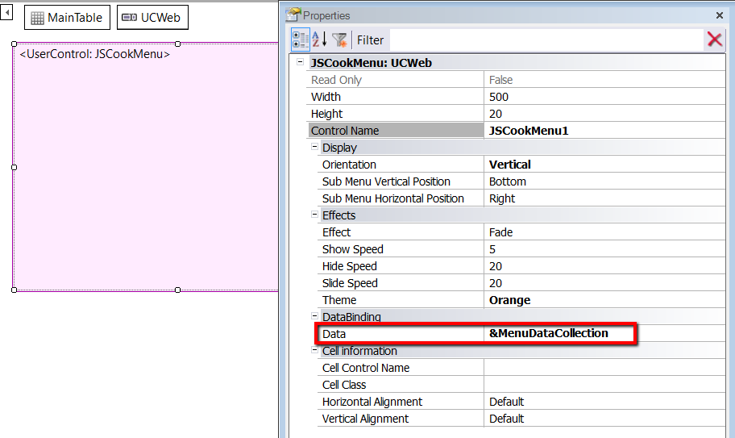

If you need to include a Menu based on the GAM Permissions of the user in your application, the good news is that GAM dynamically creates the structure of the Menu with no need for any extra coding.
GeneXus Access Manager (GAM) returns a Menu structure that can be displayed using any User Control that is appropriate for displaying a hierarchical structure.
To do so, follow the steps below:
Event Start
//&ApplicationGUID is the GUID of the GAM Application
//&MenuGUID is the GUID of the Menu
&MenuOptionList = GAMRepository.GetApplicationMenu(&ApplicationGUID,&MenuGUID, &Errors) //&MenuOptionList is
//GAMMenuOptionList data type
//The following data provider returns a collection of JSCookMenuItem given a GAMMenuOptionList collection
&MenuDataCollection = TransformGAMMenuToJSCookMenu(&MenuOptionList.Nodes)
Endevent

For more information about the GAM API for handling Menus, read API for Menus.
4. The code of TransformGAMMenuToJSCookMenu is as follows:
JSCookMenuItem input &Menuitem in &Menu //&Menu is a collection of GAMMenuOptionList data type
{
Title = &Menuitem.Name
Url = &Menuitem.Link
Childs = TransformGAMMenuToJSCookMenu(&Menuitem.Nodes)
}
parm(&Menu);
You can download the sample here.
Following very similar steps, you can use the TreeView (which is distributed in the standard UCs toolbox) instead of the JSCookMenu.
You can download the TreeView sample here.
| Backlinks | |
| Toc:GeneXus Access Manager (GAM) | HowTo: Define a Menu using GAM |